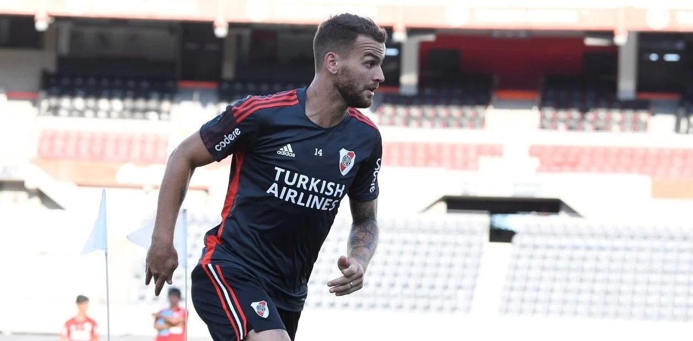
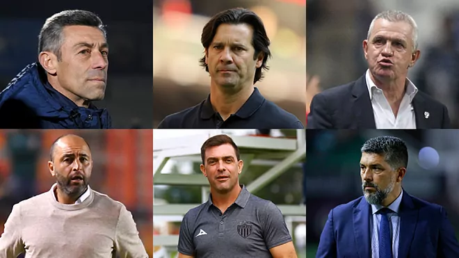

El defensor se recupera del golpe que recibió ante Racing. La práctica de este miércoles será clave para ratificar su evolución.
"No estaba para seguir, carajo". El golpe que sufrió Leandro González Pirez frente a Racing desató el enojo de Marcelo Gallardo con el médico del plantel -Pedro Hansing- pero también con el kinesiólogo -Jorge Bombicino- y hasta con el propio jugador, que decidió seguir en la cancha, no pudo perseguir a Copetti en el 1-2 parcial y luego salió con muchos signos de dolor.
Sin embargo, esa bronca comenzó a atenuarse: el zaguero pasó de estar en duda para visitar a San Lorenzo a mostrar una evolución tal que lo pronostica en cancha el sábado por la noche: el ex Atlanta United e Inter de Miami intensificó los trabajos este miércoles, fue probado por el profe Pablo Dolce y respondió de manera satisfactoria.
La decisión fue tomada por la FIFA, que publicó un comunicado conjunto con la Confederación europea (UEFA).
Rusia fue excluida del Mundial de fútbol por su organizadora, la FIFA, que anunció este lunes la suspensión de las selecciones nacionales y de los clubes rusos "hasta nueva orden", como reacción a la invasión de Ucrania, en un comunicado conjunto con la Confederación europea (UEFA).
Sin embargo, esa bronca comenzó a atenuarse: el zaguero pasó de estar en duda para visitar a San Lorenzo a mostrar una evolución tal que lo pronostica en cancha el sábado por la noche: el ex Atlanta United e Inter de Miami intensificó los trabajos este miércoles, fue probado por el profe Pablo Dolce y respondió de manera satisfactoria.
El goleador salió a hablar el día después que Almendra reaccionara durante la práctica de fútbol, luego de insultar a un compañero y tener un durísimo cruce con Battaglia. "A vos te manejan, como jugador ganaste todo pero como técnico sos un desastre", le tiró el volante al DT, que lo echó de la práctica, lo bajó a Reserva y avisó que mientras él sea el entrenador, no jugará más. "Son cosas que a la larga iban a pasar, es algo que no se aguantaba más. El plantel piensa igual que el cuerpo técnico, bancamos a muerte la decisión del entrenador y del Consejo. Hay cosas que sobrepasan el límite. Esto había que sacarlo de raíz y se sacó de raíz", arrancó Pipa.
Tras ocho jornadas ya hay seis estrategas cesados.
El Clausura 2022 pinta para ser uno de los torneos con más técnicos destitudos, pues tras ocho fechas ya han sido cesados seis estrategas. El último en dejar las riendas de su club fue el argentino Santiago Solari del América, equipo que marcha en penúltimo lugar de la tabla con solo seis unidades. Apenas unos días antes de la destitución de Solari, Javier Aguirre dejó su cargo con los Rayados de Monterrey al firmar también un complicado inicio de torneo, además de un decepcionante papel en el Mundial de Clubes.
Recibiras novedades diarias.